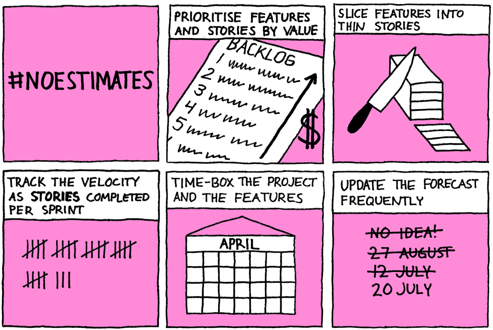

Whenever a group of agilists meet, it seems to be only a matter of time before someone points out that “doing agile is not enough, we need to be agile”.
Hard to argue with that! Agile practices alone will not make us agile. Simply going through the motions of “doing agile” won’t deliver the outcomes we’re after. However, it worries me sometimes that the pendulum may be swinging too far. Searching for better processes and tools is almost seen as anti-agile. “You should focus on the mindset, not worry about the tools!”.
I think it’s just as important to flip the statement around:
Read more
The Scrum Master will never be responsible for the success of the product. However, they have an important role in helping those who are, the product owner and the team.
A good Scrum Master can significantly increase the odds of success. Similarly, a bad Scrum Master can derail everything, causing disastrous failure. In this article, I will look at seven bad characteristics or behaviours of Scrum Masters I have witnessed.
Read more
As long as things improve, they get better
On recent commutes, I have traded the tube for the bus. The quieter environment allows me to spend the time listening to podcasts and I have ended up listening to Vasco Duarte’s Scrum Master Toolbox podcast a lot. One of my favourite questions he asks his guests is how they define success as a Scrum Master. That’s a question I have been thinking a lot about myself recently, not least since today is exactly ten years since I got my CSM.
My answer? I would like to argue that continuous improvement is the ultimate evidence of a successful Scrum Master.
Read more
Not every story about Scrum is a success story. Scrum can fail.
One of the reasons why many teams don’t get the value out of Scrum they were hoping is that they are trying to use it in a situation or environment where it is not appropriate. No set of practices will work in every single context and Scrum is no exception.
Let’s look at some examples where Scrum will either be very hard to make work or provide little value compared to a simpler process.
Read more

Estimation has long been a natural part of software development. Therefore, an approach like #noestimates, which gets rid of estimation can seem quite suspicious. After all, there are good reasons why we estimate. We need to know how long something will take so that we can decide whether it’s worth doing or how much the customer should be paying. We also want to know whether we are on track to deliver by our deadline, so we need to know how much work is left.
Read more
Does it matter what we call the Scrum Master role? Not really. The role titles are just words. What matters is the work a person does. However, I have come to realise that in some cases, classifying myself as a Scrum Master may actually limit my chances of fully meeting the potential of the role.
Let me explain!
Read more
Simply writing a sentence on the format “As a x, I want to y, so that z” won’t make it a user story. There is a lot more to stories than this.
In this article, I will take a look at what some common pitfalls are.
Read more